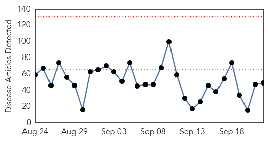
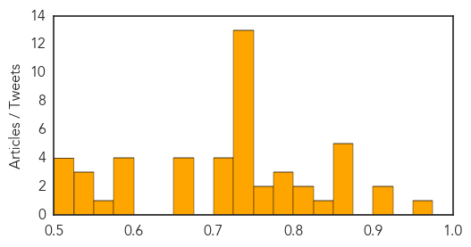
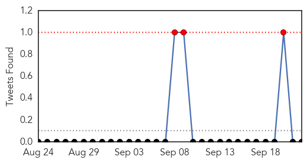
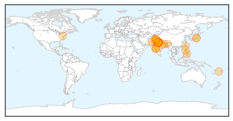

Unknown
30-Day Web Trend
0 alerts, 0 warnings

30-Day Twitter Trend
1 alerts, 0 warnings

Article Locations

Article Confidences
Top Articles:
- 0.960
- The Bellingen Shire Courier Sun
- 0.908
- TB progress threatened by rising drug resistance
- 0.905
- Boise, Meridian, Nampa, Caldwell, Idaho News, Weather, Sports and Breaking News - KBOI 2
- 0.868
- Livestock disease forces quarantine around Riverton
- 0.866
- China says investigating U.S. woman suspected of spying
- 0.863
- New clues on the history of the smallpox vaccine virus
- 0.860
- Tasmania lagging on vaccination access
- 0.858
- Peru confirms 32 anthrax cases
- 0.844
- Flu shot? No need to get out of the car
- 0.818
- Anthrax outbreak: Dozens affected in northwestern Peru
- 0.807
- Officials Link Death of Pima County Woman to Tainted Cucumbers
- 0.800
- NanoBio's Genital Herpes Vaccine Demonstrates Efficacy In Guinea Pigs As Both A Prophylactic And A Therapeutic Vaccine
- 0.798
- CVS Health : Announces New Clinical Affiliations with St. Luke's University Health Network and TriHealth
- 0.785
- Science Confirms Successful Strategy to Protect Threatened Steelhead from Virus
- 0.770
- Hunters, Landowners Encouraged to Report Suspected Cases of EHD Outdoor News Daily
- 0.767
- Lahey Health, Lahey Hospital & Medical Center and Winchester Hospital Receive High Marks from Bond Rating Agencies
- 0.738
- Lahey Health, Lahey Hospital & Medical Center and Winchester Hospital Receive High Marks from Bond Rating Agencies
- 0.729
- Yemen's Hadi 'arrives in Aden' after nearly six months in exile
- 0.729
- Republican Scott Walker quits US presidential race
- 0.729
- Pope Francis arrives in US for first-ever visit
- 0.729
- Saudi Arabia boosts security for start of hajj pilgrimage
- 0.729
- Carson faces backlash over Muslim president comment
- 0.729
- Hungary approves new anti-migrant powers despite outcry
- 0.729
- French travel publisher releases guide book for refugees
- 0.729
- France’s highest court upholds ban on UberPOP ride-sharing service
- 0.729
- Morrocans win discrimination suit against French national railway
- 0.729
- Two Basque separatist leaders arrested in southern France
- 0.729
- EU to hold talks as Hungary expands army's powers to halt migrants
- 0.729
- West African delegation calls for all sides to refrain from violence
- 0.722
- Causes, Symptoms, Diagnosis, Treatment, Prevention
- 0.713
- New Book Reveals How “Functional Medicine” Can Overhaul Health Care & Prevent Chronic Disease
- 0.713
- Health Officials Predict Flu Shot More Effective This Year
- 0.702
- Cat tests positive for rabies in Ohio County
- 0.674
- CDC: Flu Shots Should Prove More Effective This Year Than Last
- 0.659
- Southern Nevada - Las Vegas, North Las Vegas, Henderson, Boulder City
- 0.652
- Doctors recommend certain type of flu shot
- 0.651
- Peru confirms 32 anthrax cases - Xinhua
- 0.589
- Restaurants Can Once Again Serve Raw B.C. Oysters
- 0.589
- 'Aggressive gonorrhoea' heading for Somerset?
- 0.580
- West Africa presidents to travel to Burkina to mediate in crisis
- 0.576
- Patients suffer as doctors on strike in Satkhira
- 0.561
- Dog-bite incidences rise in rabies-infected states – BorneoPost Online
- 0.542
- Have DDT and Polio Vaccines been Used for Population Control?
- 0.531
- Doctors issue warning against pharmacy test
- 0.531
- Vaccine might replace surgery for cervical cancer
- 0.523
- ‘Withdrawal symptoms’ land hundreds in hospital across Telangana
- 0.520
- Celebrating the Post-Graduate Diploma Course in Emergency and Critical Care Medicine > IGIHE.com English Version
- 0.518
- Peru confirms 32 anthrax cases
- 0.507
- HCM City aims to be free of leprosy within five years
Top Tweets:
- 0.654
- Tengo un problema con eso de la pizca de sal
- 0.640
- RT: La Penicilina se descubrió el 22 de Sep. 1928. Una casualidad en el laboratorio de Alexander Fleming inició la "era de los an…
- 0.523
- Se apago el tv de repente...aahh ya,apagón de 3hrs sinluz bueno pa'l calor
Dengue Fever
30-Day Web Trend
12 alerts, 1 warnings

30-Day Twitter Trend
3 alerts, 0 warnings

Article Locations
Article Confidences

Top Articles:
- 0.999
- Dengue figures at an all-time high
- 0.997
- Dengue Awareness On The Rise: Bengaluru Doctors
- 0.995
- A dozen doctors fall victim to dengue at Delhi's Safdarjung Hospital as death toll keeps rising
- 0.995
- Science, Technology and Medicine News Updates From Asia
- 0.994
- Dengue Outbreak: Two More Deaths In Delhi, Toll Rises To 25
- 0.989
- Dengue on a phenomenal rise with 1,919 cases, 12 deaths in the last week
- 0.981
- Islooites at risk of dengue fever outbreak
- 0.977
- More than 2,500 people treated for dengue in September
- 0.976
- Climate change effects
- 0.972
- 12 deaths, 1900 fresh cases in past week
- 0.970
- Slowdown in Tainan’s dengue cases must be monitored: CDC
- 0.968
- 2 more die of dengue, LG for full scale ops to check outbreak
- 0.963
- Health Ministry monitoring situation arising out of Dengue
- 0.962
- After Punjab and Haryana, dengue scare in Chandigarh with 136 cases
- 0.960
- Cavite declares state of calamity due to upsurge in dengue cases
- 0.959
- India's Dengue Fever Outbreak Reveals Need for Healthcare
- 0.953
- Health Ministry monitoring situation arising out of Dengue in Delhi
- 0.942
- Lessons from India’s dengue scare
- 0.937
- Health Ministry monitoring situation arising out of Dengue
- 0.936
- Over 1,900 dengue cases a week, Centre reviews hospitals
- 0.923
- 3 test positive for dengue
- 0.914
- DOH reports 16.5% higher dengue incidence
- 0.913
- Reports say India had over 10,000 Acute Encephalitis Syndrome cases in 2014
- 0.898
- Haryana bars private hospitals from listing patient as dengue-hit
- 0.897
- Latest News & Gossip on Popular Trends at India.com
- 0.884
- Fighting epidemics: Ministry seeks help from The Global Fund
- 0.883
- 4 Bollywood celebs who suffered from deadly dengue
- 0.876
- Ministry to seek Global Fund support in dengue fight
- 0.873
- Dengue danger ticks for four
- 0.873
- No panic like situation in Punjab, Haryana over dengue
- 0.863
- Lt Governor Najeeb Jung takes stock of dengue crisis in Delhi
- 0.846
- Fighting disease: Three die of dengue over six-week span in Hazara division
- 0.833
- Provinces asked to redouble efforts for control of dengue fever
- 0.822
- Nation, News, The Philippine Star
- 0.790
- Private Hospitals Blamed For Dengue Scare
- 0.784
- Cuttack to take sting out of dengue
- 0.733
- Science, Technology and Medicine News Updates From Asia
- 0.729
- Delhi govt likely to buy 1,000 new beds for dengue patients
- 0.698
- Dengue strikes again
- 0.672
- Delhi RTYC helps Samyeling combat dengue
- 0.655
- Health Minister calls for intensified efforts to fight Dengue fever
- 0.655
- :: News4u :: HC seeks details of funds released for dengue control
- 0.625
- QUICK EDIT: Politics can't make AIIMS free of dengue
- 0.557
- L-G directs officials to make all efforts to tackle dengue
Top Tweets:
-
No tweets found for Sep 22, 2015